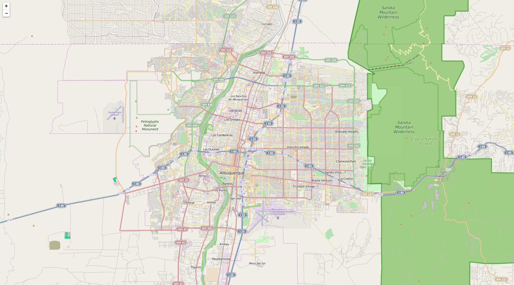
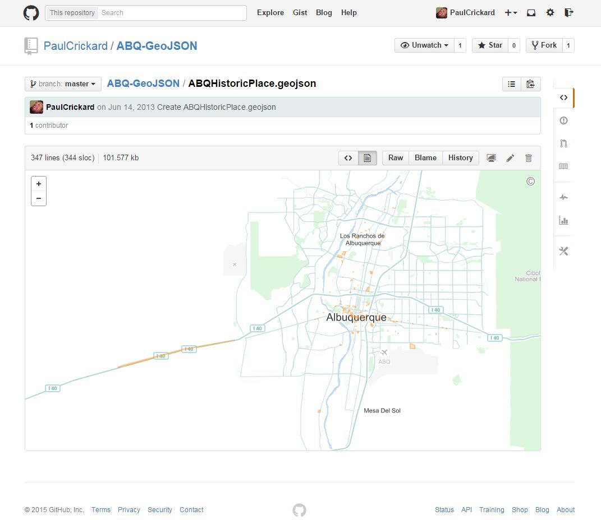
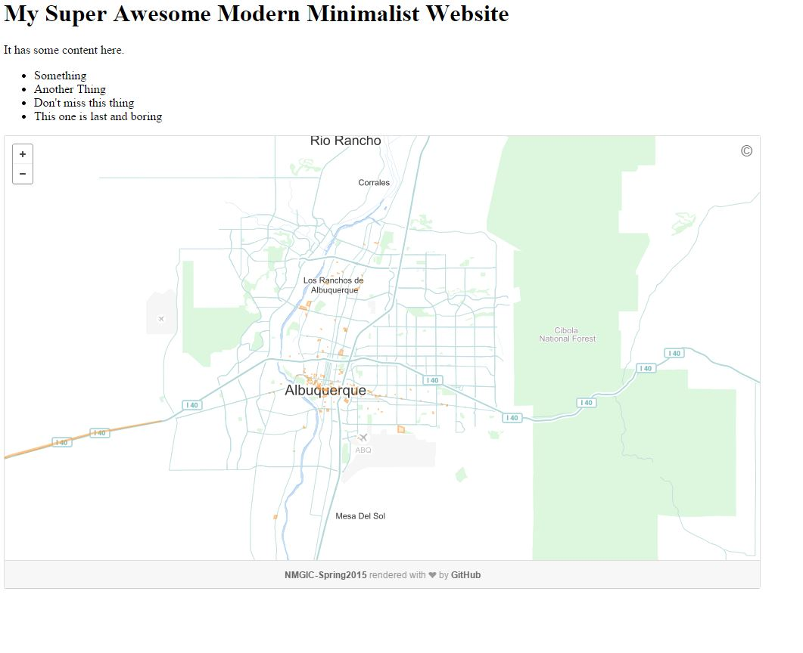
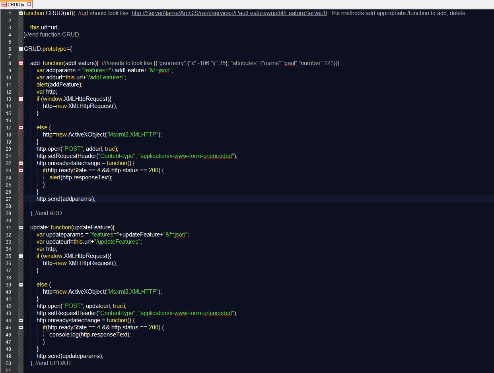
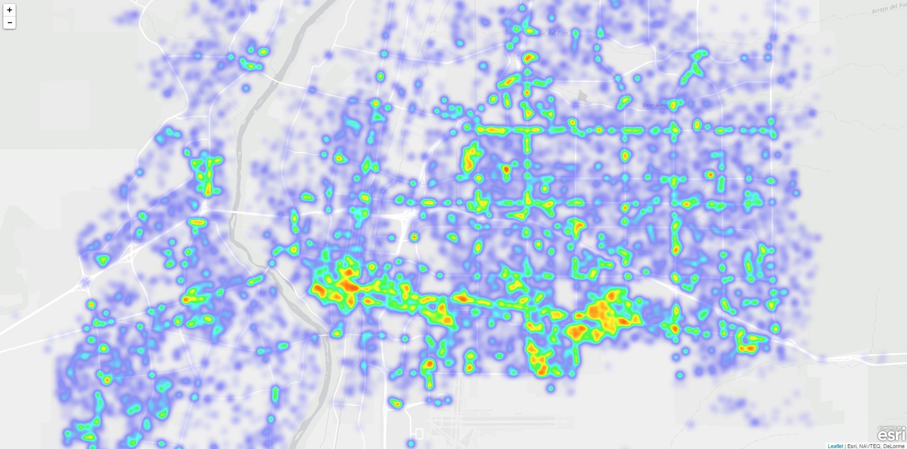
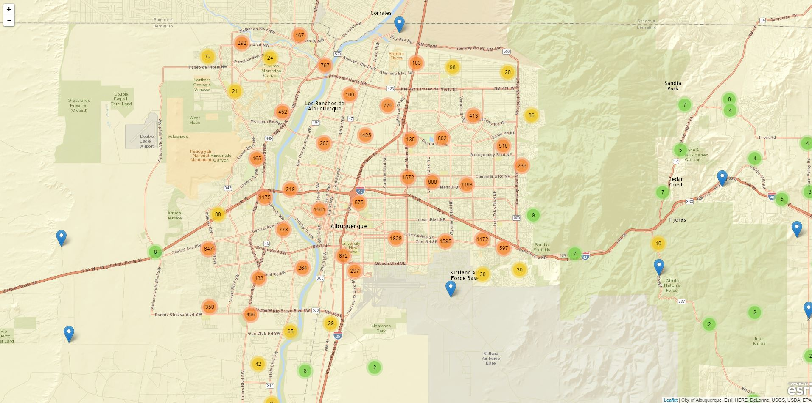

<!DOCTYPE html><html><head><title>JavaScript for Geospatial Development</title>
<meta charset='utf-8'>
<meta name="viewport" content="width=device-width, initial-scale=1.0, maximum-scale=1.0, user-scalable=0" />

<link href='big.css' rel='stylesheet' type='text/css' />
<style>
  .new-shiny { background: #aaaaaa; }
</style>

<script src='big.js'></script>


</head><body>


<!-- Title -->
<div>Front Matter<br><br><a href="https://github.com/PaulCrickard/paulcrickard.github.io">github.com/PaulCrickard/paulcrickard.github.io</a></div>
<div>JavaScript for Geospatial Development<br><a href="http://nmgic.com">NMGIC Spring 2015</a><br>Paul Crickard</div>
<div><em>Leafet.js Essentials</em><br>MS Political Science<br><em>Programmer @ CABQ DMD</em><br>github.com/paulcrickard<br><em>@pcrickard</em><br>paulcrickard@gmail.com</div>

<!-- Outline -->
<div><em>Disclaimer:</em><br></div>
<div><h3>Topics</h3><br><a href="http://leafletjs.com/">Leaflet.js</a><br><br><a href="http://resources.arcgis.com/en/help/rest/apiref/">ESRI Rest API</a><br><br><a href="http://turfjs.org/">Turf.js</a><br><br><a href="https://github.com/Esri/esri-leaflet">ESRI Leaflet</a></div>


<!-- Leaflet -->

<div><em>122kb<em> of JavaScript mapping goodness<br></div>
<div><em>Open Layers</em><br> 473k</div>
<div><em>ESRI jsapi </em><br>452kb</div>
<div>FeatureLayer 86k<br><br><em>BasemapGallery 109kb<br></em><br>Utils 207k</div>
<div>Map in <em>2 lines</em> of code</div>
<div><pre>var map = L.map('map', {center: [35.10418, -106.62987],zoom:18});<br><br>var t = L.tileLayer('http://{s}.tile.osm.org/{z}/{x}/{y}.png').addTo(map);</pre></div>
<div><h3>Layers</h3><em><ul><li>Points (Marker)</li><li>Lines</li><li>Polygons</li></ul></em></div>
<div><pre>L.marker([35,-106]);</pre></div>
<div><pre>L.polyline([ [35.05698,-106.72806],<br>&nbsp&nbsp&nbsp&nbsp&nbsp&nbsp&nbsp&nbsp&nbsp&nbsp&nbsp&nbsp[35.06035,-106.63467],<br>&nbsp&nbsp&nbsp&nbsp&nbsp&nbsp&nbsp&nbsp&nbsp&nbsp&nbsp&nbsp[35.03899,-106.46164]]);</pre></div>
<div><pre>L.polygon([[ <em>[35.10418,-106.62987]</em>,<br>&nbsp&nbsp&nbsp&nbsp&nbsp&nbsp&nbsp&nbsp&nbsp&nbsp[35.08845,-106.51794],<br>&nbsp&nbsp&nbsp&nbsp&nbsp&nbsp&nbsp&nbsp&nbsp&nbsp[35.0581,-106.51245],<br>&nbsp&nbsp&nbsp&nbsp&nbsp&nbsp&nbsp&nbsp&nbsp&nbsp[35.05586,-106.63055],<br>&nbsp&nbsp&nbsp&nbsp&nbsp&nbsp&nbsp&nbsp&nbsp&nbsp<em>[35.10418,-106.62987]</em> ]]);</pre></div>
<div><em>GeoJSON</em></div>
<div><pre>L.geoJson(TheGeoJSON);</pre></div>
<div>Or, just use GitHub</div>
<div><em>GitHub maps your GeoJSON</em></div>
<div><em>Embed it</em></div>
<div><a href="http://geojson.io/">GeoJSON.io</a></div>
<div><em><strike>Multi-Line<br>Multi-Polygon</strike></em><br>Feature Group</div>
<div><pre>L.featureGroup([marker, polyline, polygon]);</pre></div>
<div><h3>Events</h3><em><ul><li>Clicks</li><li>Mouse</li><li>View changes</li></ul></em></div>
<div><pre>object.on(<em>"event"</em>,function(){<br>&nbsp&nbsp&nbspDo something...});</pre></div>
<div><pre>map.on(<em>"click"</em>,function(e){<br>&nbsp&nbsp&nbsp alert(e.latlng);});</pre></div>
<div><em>click</em>, dblclick, <em>mousedown</em>, mouseup, <em>mouseover</em>, mouseout, <em>mousemove</em>, contextmenu, <em>focus</em>, blur, <em>preclick</em>, load, <em>unload</em>, viewreset, <em>movestart</em>, move, <em>moveend</em>, dragstart, <em>drag</em>, dragend, <em>zoomstart</em>, zoomend, <em>zoomlevelschange</em>, resize, <em>autopanstart</em>, layeradd, <em>layerremove</em>, baselayerchange, <em>overlayadd</em>, overlayremove, <em>locationfound</em>, locationerror, <em>popupopen</em>, popupclose</div>
<div>Mobile</div>
<div><pre>body {padding: 0; margin: 0;}<br>html, body, #map {height: 100%;}</pre></div>
<div><pre>meta name="viewport" content="width=device-width, initial-scale=1.0, maximum-scale=1.0, user-scalable=no"</pre></div>
<div><pre>map.locate({option:value})</pre><br><em>watch, setView, maxZoom, <br>timeout, maximumAge,<br> enableHighAccuracy</em></div>
<div><pre>map.on('locationfound', foundMe);<br>map.on('locationerror', ooops);</pre></div>
<div><a href="http://leafletjs.com/plugins.html">Plugins Galore!</a><br><br>Or write your own</div>


<!-- ESRI REST API -->
<div><h3>REST API</h3><br><a href="http://coagisweb.cabq.gov/arcgis/rest/services/public">/arcgis/rest/services</a></div>
<div><h3>Query</h3><br><a href="http://coagisweb.cabq.gov/arcgis/rest/services/public/PublicArt/MapServer/0/query">Public Art</a></div>
<div><h3>Parameters</h3><br><em><ul><li>1=1</li><li>ObjectID</li><li>In SR</li><li>Out SR</li><li>Out Fields=*</li></ul></em></div>
<div><h1>AJAX</h1><br><pre>http=new XMLHttpRequest();<br>http.open("POST", url, true);<br>http.setRequestHeader("Content-type", "application/x-www-form-urlencoded");<br>http.onreadystatechange = function(){<br>if(http.readyState == 4 && http.status == 200) {<br>result= JSON.parse(http.responseText);}}<br>http.send(params);</pre></div>
<div><h1>AJAX to Map</h1><br><pre>for(var x=0;x<result.features.length;x++){<br>L.marker([result.features[x].geometry.y,result.features[x].geometry.x]).addTo(map);}</pre></div>
<div>C<em>reate</em><br>R<em>ead</em><br>U<em>pdate</em><br>D<em>elete</em></div>
<div></div>
<div><h1>Use CRUD</h1><br><pre>var myFeature=new CRUD("http://Server/arcgis/rest/services/a/FeatureServer/0");<br>myFeature.delete(55);<br>myFeature.add(pointToAdd);</pre></div>
<div><h3>Other Services</h3><br><a href="http://coagisweb.cabq.gov/arcgis/rest/services/locators/CABQ_Composite/GeocodeServer/findAddressCandidates">Geocode</a><br><br><a href="http://coagisweb.cabq.gov/arcgis/rest/services/Imagery/Aerials2014/ImageServer/exportImage?bbox=1354494.9999728415,1276134.000009775,1673234.9999728415,1688080.000009775">GetImage</a><br><br><a href="http://coagisweb.cabq.gov/arcgis/rest/services/Utilities/Geometry/GeometryServer">Geometry(buffer)</a></div>


<!-- Turf -->


<div><h1>Turf</h1><br><em>GeoJSON<br>WGS 84</em></div>
<div><h1>Point</h1><br><pre>var point = turf.point([-106.62987,35.10418 ], <br>{ name: 'point', Attrib:"Some Attribute",num:3,color:"#ff0000"});</pre></div>
<div><h1>Linestring</h1><br><pre>var linestring = turf.linestring([  [-106.72806,35.05698],[-106.63467,35.06035],[-106.46164,35.03899]  ],<br>{ name: 'polygon', Attrib:"Some Attribute",num:3,color:"#0000ff"});</pre></div>
<div><h1>Polygon</h1><br><pre>var polygon = turf.polygon([[[-106.62987,35.10418 ],[-106.51794,35.08845],<br>[-106.51245,35.0581],[-106.63055,35.05586],[-106.62987,35.10418 ]   ]], <br>{ name: 'polygon', Attrib:"Some Attribute",num:3,color:"#ff0000"});</pre></div>
<div><h1>In Leaflet</h1><br><pre>L.geoJson(polygon).addTo(map);</pre></div>
<div>Spatial Analysis</div>
<div><em>aggregate</em> average<em> count</em> deviation<em> max</em> median<em> min</em> sum<em> variance</em> along<em> area</em> bbox-polygon<em> bearing</em> center<em> centroid</em> destination<em> distance</em> envelope<em> extent</em> line-distance<em> midpoint</em> point-on-surface<em> size</em> square<em> bezier</em> buffer<em> concave</em> convex<em> erase</em> intersect<em> merge</em> simplify<em> union</em> combine<em> explode</em> flip<em> kinks</em> line-slice<em> point-on-line</em> filter<em> random</em> remove<em> sample</em> hex-grid<em> isolines</em> planepoint<em> point-grid</em> square-grid<em> tin</em> triangle-grid<em> inside</em> tag<em> within</em> jenks<em> nearest</em> quantile<em> reclass</em></div>
<div><h1>Leaflet to Turf</h1><br><pre>a=L.marker([35,-106]);<br><em>b=a.toGeoJSON();</em><br>buffered = turf.buffer(<em>b</em>,.05,"miles");</pre></div>


<!-- ESRI Leaflet -->

<div><em>ESRI Leaflet</em><br>Simplifies the REST API</div>
<div><em>AJAX</em><br>9 lines</div>
<div>ESRI<br><pre>var find = L.esri.Tasks.find('http://server/.../govunits/MapServer');<br>find.layers('18').text('Colorado');<br>find.run(function(error, featureCollection, response){<br>Do Something with featureCollection.features[x]});</pre></div>
<div>CRUD built in<br><pre>var pt = L.esri.featureLayer('http://server/.../.../FeatureServer/0').addTo(map);<br>pt.addFeature(t.toGeoJSON(), function(error, response) {<br>console.log(error, response);});</pre></div>
<div>Basemaps<br><pre>L.esri.basemapLayer("Gray").addTo(map);</pre></div>
<div>Streets<br><em>Topographic</em><br>NationalGeographic<br><em>Oceans</em><br>DarkGray<br><em>Imagery</em><br>ShadedRelief</div>
<div>Image Service</div>
<div>Dynamic Map Layer</div>
<div>Feature Layer</div>
<div><em>Heatmaps</em></div>
<div>Cluster</div>


<div>Questions?</div>


<script type="text/javascript">

//How to add Code- maybe still use an image
//<div>How to loop in JS<br><pre>var a = "Hello World";<br>console.log(a);<br>for(x=0;x<1;x++){<br>&nbsp&nbspDo something here.....<br>}</pre></div>

  var _gauges = _gauges || [];
  (function() {
    var t   = document.createElement('script');
    t.type  = 'text/javascript';
    t.async = true;
    t.id    = 'gauges-tracker';
    t.setAttribute('data-site-id', '4e36eb1ef5a1f53d6f000001');
    t.src = '//secure.gaug.es/track.js';
    var s = document.getElementsByTagName('script')[0];
    s.parentNode.insertBefore(t, s);
  })();
</script>


</body>
</html>
